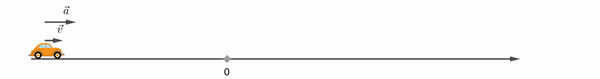
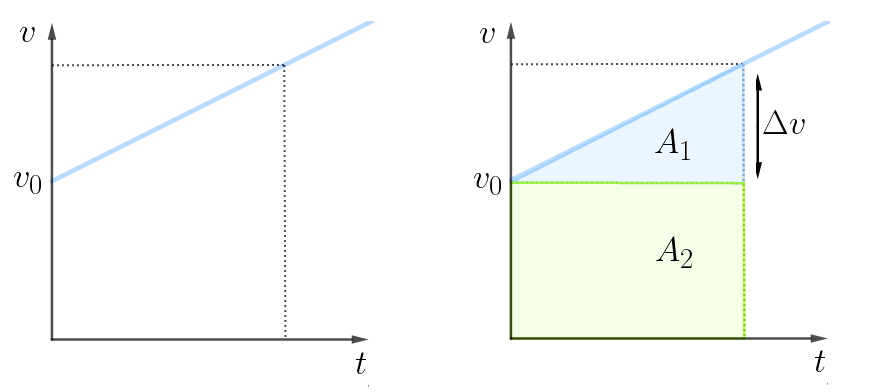
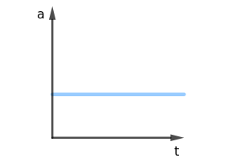
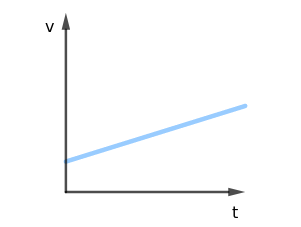
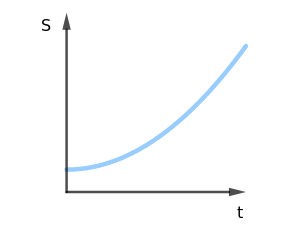

Aula1-5: Movimento retilíneo uniformemente variado (MRUV)
Trata-se do movimento retilíneo regido por uma velocidade que varia com taxa constante, ou seja, o movimento ocorre sobre uma linha reta com velocidade variável: a variação acontece por meio de incrementos ou decrementos regulares de velocidade no tempo. A grandeza física que mede a variação da velocidade no tempo é a aceleração e, neste contexto, ela é constante.

Aceleração média
A aceleração média mede a taxa de variação da velocidade em relação ao tempo. Para calculá-la, basta fazer a razão entre a variação de velocidade e o intervalo de tempo correspondente a essa variação.
-
Movimento acelerado: Ocorre sempre que a aceleração e a velocidade têm o mesmo sentido (o corpo ganha velocidade sob efeito dessa aceleração, ou seja, o módulo da velocidade aumenta).
-
Movimento retardado: Ocorre sempre que a aceleração e a velocidade têm sentidos opostos (o corpo freia, perdendo velocidade sob efeito dessa aceleração; ou seja: o módulo da velocidade diminui).
Equação horária da velocidade
A equação horária da velocidade é uma equação que fornece a velocidade em função do tempo. Obtemos essa equação por meio da manipulação algébrica da equação da aceleração.
Equação horária do espaço
Na dedução da equação horária do espaço, usamos um fato geométrico importante: a área sob o gráfico de velocidade em função do tempo fornece o deslocamento do corpo estudado.

Equação de Torricelli
A equação de Torricelli é obtida a partir da manipulação algébrica das duas equações estudadas anteriormente. O resultado final é uma equação que envolve apenas três variáveis (deslocamento, velocidade e aceleração). Perceba que o tempo não aparece nessa equação: portanto, quando um problema não fornece nem pede o tempo, a equação de Torricelli costuma ser a ferramenta mais adequada.
Demonstração:
Primeiramente, isolaremos o tempo na equação horária da velocidade:
Em seguida, substituímo-lo na equação horária do espaço:
Após isso, basta manipular algebricamente a expressão acima para obter a fórmula final:
Gráficos do MRUV
|
ACELERAÇÃO X TEMPO No MRUV a aceleração (taxa de variação da velocidade) é constante e diferente de zero. Por isso, o gráfico da aceleração em função do tempo é sempre uma reta horizontal. |
VELOCIDADE X TEMPO O gráfico da velocidade em função do tempo é uma reta oblíqua: crescente quando a aceleração é positiva e decrescente quando ela é negativa. O ponto em que essa reta cruza o eixo vertical indica a velocidade inicial do móvel. |
ESPAÇO X TEMPO O gráfico do espaço em função do tempo é sempre uma parábola. A concavidade da parábola fica voltada para cima quando a aceleração é positiva e para baixo quando ela é negativa. O ponto em que o gráfico cruza o eixo vertical indica a posição inicial do móvel. |
||
|
 |
 |
 |